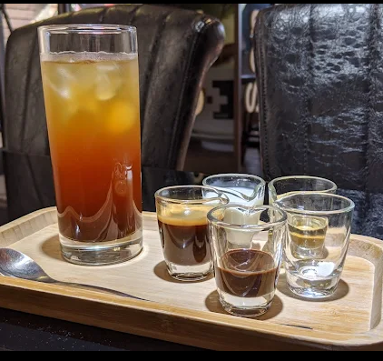
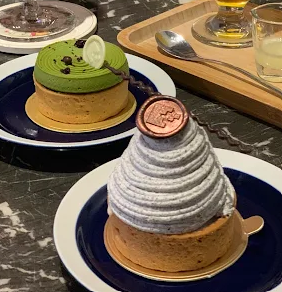
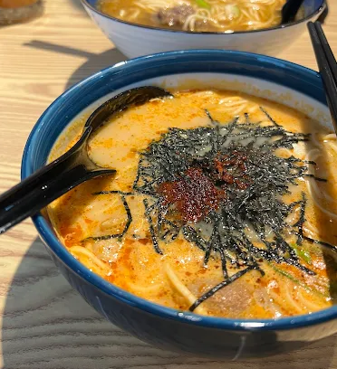
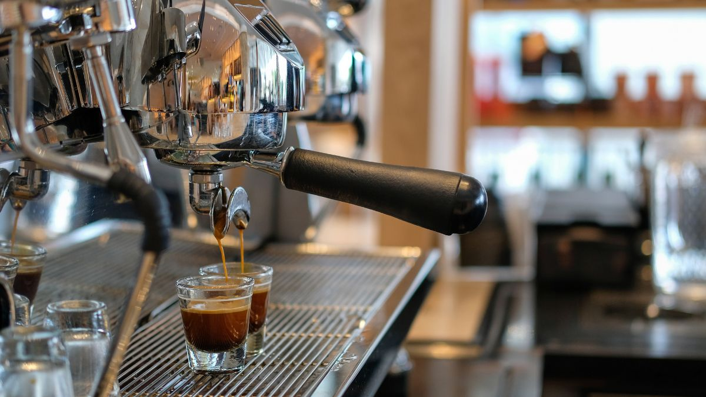

背景介紹
食品產地介紹

有機咖啡豆
9分之1咖啡嚴選來自有機農場的咖啡豆，保留天然風味，讓您每一口都能品嚐到純粹與安心。

特色飲品
9分之1咖啡堅持選用天然食材，調配出獨一無二的健康飲品風味。

手工甜點
由9分之1咖啡點心師傅手工製作，少糖少油，每一口都能感受到我們對健康的堅持。

熟食
9分之1咖啡不只提供飲品，也推出熟食選項，為您帶來暖心的美味。
咖啡廳文化理念精神
文化介紹
我們相信，生活再忙，也該為自己保留那屬於「九分之中的一分」。在這個節奏快速的時代裡， 9分之1咖啡廳希望成為你心中那一分的緩慢與安穩。
這裡，是一本書、一杯熱咖啡、一段對話的開始； 這裡，是你在深夜仍能安心前來的避風港。
我們用溫潤的燈光與柔和的空間設計，營造出如家般的舒適感， 讓每一位踏入的顧客，都能卸下疲憊，感受到被理解與接住的溫柔。

抹茶咖啡
抹茶咖啡製作流程
焦糖鹽之花
咖啡師分享咖啡沖煮技巧
常見 Q&A
Q: 你們的咖啡豆是從哪裡進口的？
A: 我們的咖啡豆主要來自南美洲、非洲和東南亞等咖啡產區，都是經過精心挑選的優質豆種。
Q: 咖啡廳有提供無咖啡因的選擇嗎？
A: 是的，我們提供多種無咖啡因飲品，包括花草茶、果汁和特調飲品。
Q: 你們的甜點是自製的嗎？
A: 是的，所有甜點都是由我們的甜點主廚每天新鮮製作，使用優質天然食材。
Q: 咖啡廳有提供外送服務嗎？
A: 是的，我們提供外送服務，可以通過我們的官網或電話預訂。
Q: 咖啡廳有提供場地租借嗎？
A: 是的，我們提供場地租借服務，適合小型聚會、讀書會或工作坊等活動。